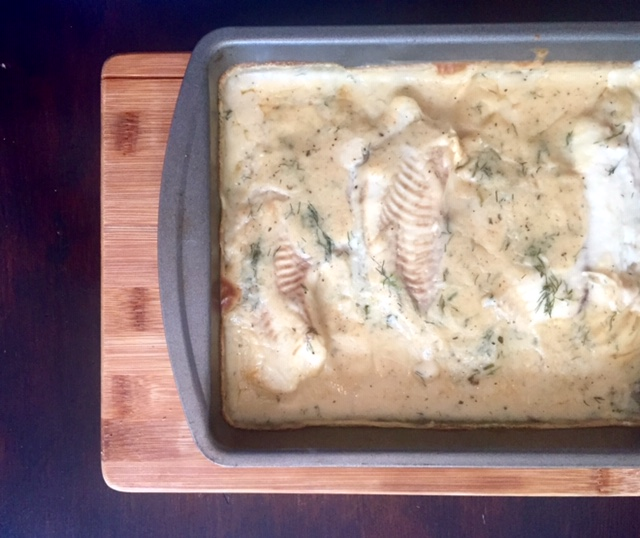

Creamy Dill and Lemon Tilapia

Ingredients
- 3 large sweet potatoes, diced and cooked
- 1 16oz can of pumpkin puree
- 1 red onion, chopped
- 2 cloves of garlic, minced
- 1 tbsp of butter
- 4 cups of chicken broth
- 1/2 tsp of nutmeg
- salt and pepper to taste
Instructions
- Add butter, onion, and garlic to a large
pot on medium low heat and cook until
translucent (5 mins).
- Add sweet potatoes, pumpkin puree,
and chicken broth to the pot. Turn heat
up to high and simmer for 15 mins. ( ProTip: Once it starts
boiling turn down to medium high heat so
it doesnt boil over.)
- Take the pot off the heat and use an immersion
blender until soup is as smooth as you want.
Add nutmeg and salt and pepper to taste.